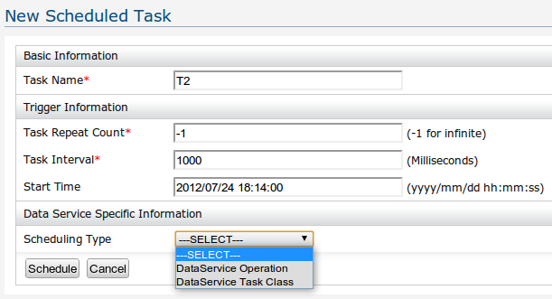

The Scheduled Tasks feature in Data Services Server can be used to invoke a particular operation periodically. The scheduled tasks functionality is useful when a specific data service operation, which is scheduled to execute, is associated with an event-trigger. So when a scheduled task is run, the event can be automatically fired by evaluating the even-trigger criteria. As an example, if we have scheduled a task on "getProductQuantity" operation, and we can set an event (e.g. sending an email) if quantity has gone down to some level.
We have added task coordination capability as well, which will be useful to coordinate tasks in a DSS clustered environment.
How to enable coordination functionality:
By default coordination functionality is disable in tasks. You can enable it using configuration file "coordination-client-config.xml" located in "$DSS_ROOT/repository/conf/advanced/" directory.
Set "<CoordinationClientConfiguration enabled="true">" and define the coordination server host and port as well.
You need to run a coordination provider server (ZooKeeper). If you want, the Carbon coordination feature can be installed instead of running external ZooKeeper server. Multiple coordination servers can be used to handle fail-over.
Following sample configuration shows the coordination enabled coordination-client-config.xml
<CoordinationClientConfiguration enabled="true">
<Servers>
<Server host="localhost" port="2181"/>
</Servers>
<SessionTimeout>5000</SessionTimeout>
</CoordinationClientConfiguration>
When the tasks are run in a clustered environment, when multiple tasks are already registered/scheduled, and if the servers were shut down, there will be a problem when the
servers are started up, where a single server, who started first, would try to schedule all the tasks inside himself, since he can only see his server available. To handle
this situation, there is a mechanism in scheduled tasks, where given a server count parameter, it will wait for a certain number of servers to start up before scheduling any tasks.
So when all the required servers are started up, it will distribute the tasks among the identified task servers.
The startup server count is given by setting the Java system property "task.server.count".
eg: ./wso2server.sh -Dtask.server.count=3
Here, all servers will wait until it detect three servers in total in the cluster.
NOTE: For scheduling tasks for invoking data service operations, only data services with an HTTP endpoint is available for scheduling, and also, only no input parameter operations can be used in scheduling.
Click on "Add New Task" option
Then you will be redirected to the Task Configuration page
Figure 1: Adding a New Task
Task can be configured to invoke a data-service operation or it can be configured to use custom java class which has implemented org.wso2.carbon.dataservices.task.DataTask interface.
The following set of properties should be defined in order to successfully create a task
Parameters required to define a task that use data-service operation
Parameters required to define a task that use custom java class
After configuring the task with appropriate values, Hit the "Schedule" button to schedule it.
The coordination servers, which are Apache ZooKeeper servers itself can be clustered to cater the fail over scenarios. This is done by first creating a ZooKeeper cluster
configuration for each ZooKeeper server instance and starting them up, the ZooKeeper configuration can be found in "$ZooKeeperROOT/conf/zoo.cfg", or in the embedded coordination server feature,
it will be available at "$DSS_ROOT/repository/conf/advanced/zoo.cfg". A detailed guide on configuring ZooKeeper server for clustering can be found at
http://zookeeper.apache.org/doc/r3.2.2/zookeeperAdmin.html#sc_zkMulitServerSetup.
In the client side of the coordination functionality, the file "$DSS_ROOT/repository/conf/advanced/coordination-client-config.xml" will resemble the following for multiple clustered
coordination server entries.
<CoordinationClientConfiguration enabled="true">
<Servers>
<Server host="localhost" port="2181"/>
<Server host="192.168.0.2" port="2181"/>
<Server host="192.168.0.3" port="2181"/>
</Servers>
<SessionTimeout>5000</SessionTimeout>
</CoordinationClientConfiguration>
So in the above configuration, we have pointed to three ZooKeeper servers residing on the localhost, 192.168.0.2 and 192.168.0.3 locations, all with client port 2181.